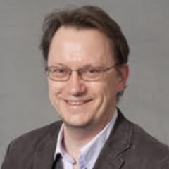
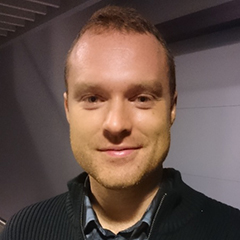
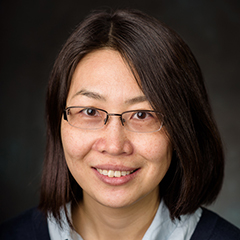
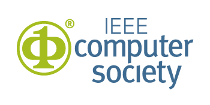
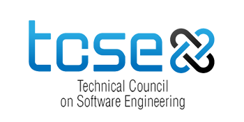

SER&IP is happy to announce
the IEEE Software Best Paper Award again this year!
Session 1 |
||
| 9:00-9:05 | Opening | |
| 9:05-10:05 | Keynote: Decoding technology transfer through experiences at Microsoft, Dr. Dongmei Zhang, Microsoft Research Asia | |
| 10:05-10:30 | Continuously evaluated research projects in collaborative decoupled environments, Oliver Schmidts, Bodo Kraft, Marc Schreiber and Albert Zündorf | |
| Break 10:30-11:00 | ||
Session 2 |
||
| 11:00-11:25 | Towards Improving Industrial Adoption: The choice of programming languages and development environments, Ivonne von Nostitz-Wallwitz, Jacob Krüger and Thomas Leich | |
| 11:25-11:40 | Watching The Detectives: An initial report on an industrial experiment to collaborate with the empirical software engineering research community, Ken Wallace | |
| 11:40-12:00 | From Theory to Practice – Experiences of industry-academia collaboration from a practitioner, Baldvin Gislason Bern | |
| 12:00-12:30 | Preparation of round table discussion sessions (selection of topics) | |
| Break 12:30-14:00 | ||
Session 3 |
||
| 14:00-15:00 | Keynote: Automated test case design at Facebook, Dr. Mark Harman, Professor of Software Engineering (UCL) & Engineering Manager at Facebook | |
| 15:00-15:30 | Round-table disccusion | |
| Break 15:30-16:00 | ||
Session 4 |
||
| 16:00-17:00 | Round-table disccusion continues | |
| 17:00-17:30 | Presentations of findings from round-table discussion sessions | |
The aim of this workshop is to bring together researchers and practitioners to discuss the current state of Software Engineering (SE) research and Industrial Practice (IP), and advance collaboration to reduce the gap between research and practice. Research and business are coupled for the software companies which are transforming intellectual property into products, services and business concepts. However, dissatisfaction regarding the state of interaction between research and practice is not hard to find. Therefore, the challenges are to identify the gaps and to discover ways of improving collaboration, for the mutual benefit of research and industrial practice.
Different perceptions and expectations are obstacles to collaboration between SE researchers and practitioners. Researchers have a view that practitioners are reluctant to share real industry data due to confidentiality agreements. Practitioners believe that researchers are mostly working on either dated or futuristic theoretical challenges which are very far from IP. Researchers believe that practitioners are looking for quick fixes to their problems instead of using systematic methods or engaging in-depth research. Practitioners have a view that case studies in research do not represent the complexities of real projects and have doubts in the results produced by research. Researchers expect good problems along with real industry data and a few years to generate good publications which may affect a specific domain in a limited way. Practitioners expect a quick general solution which must earn substantial profit immediately. Researchers and practitioners need to overlap research and practice to build trust in their partnership. This workshop is a platform to discuss and address such challenges.
The registration is now open. Early registration benefit in fee is available before April 1st 2018. To register visit the registration page, https://www.icse2018.org/attending/Registration.
Paper and talk proposal submission (Extended):
February 12, 2018 February 05, 2018
The workshop will have paper presentations, practitioners’ talk and round table discussions. Researchers and practitioners are invited to submit papers and talk proposals on topics related to the workshop. These topics include, but are not limited to:
SER&IP 2018 is soliciting regular and short papers as well as talk proposals. Regular papers should not exceed 8 pages, short papers should not exceed 4 pages and talk proposals should not exceed two-page extended abstract and 15 minutes presentation/video. Papers and abstract should conform to the ICSE submission format and guidelines. Please submit the papers in PDF format on EasyChair.
Papers and talk proposals should be original and unpublished material describing innovative and mature research results, experience reports, case studies, challenges, problems and solutions, ongoing work, new ideas, new results and future trends. All submissions will be reviewed by three program committee members. The program committee will review all submissions for impact, lessons learnt, scale of knowledge, technology transfer, novelty, quality, relevance, and their potential to trigger discussions at the workshop.
The accepted workshop papers, both regular and short, and two page extended abstracts will be published in the ICSE 2018 workshop proceedings in the ACM Digital Library. Authors of accepted papers and talks are required to register and present the paper at the workshop for the paper and or extended abstract to be included in the proceedings. The official publication date of the workshop proceedings is the date the proceedings are made available in the ACM Digital Library. This date may be up to two weeks prior to the first day of ICSE 2018. The official publication date affects the deadline for any patent filings related to published work.
Microsoft Research Asia
Abstract:
Technology transfer is an important form of collaboration between software engineering researchers and industrial practitioners. Despite the mutual benefits, it remains a huge challenge to carry out a technology transfer successfully. During this talk, based on our experiences at Microsoft, I will discuss some key aspects in technology transfer, including technology readiness, transfer model, and partnership building.
Biography:
Dr. Dongmei Zhang is a Senior Researcher of Microsoft Research Asia (MSRA). She is also the research manager of the Software Analytics group at MSRA. Her research interests include data-driven software analysis, machine learning, information visualization and large-scale computing platform. She founded the Software Analytics group at MSRA in 2009. Since then she has been leading the group to research and develop innovative data exploration and analysis technologies to help improve the quality of software and services as well as the software development productivity. Her group collaborates closely with multiple product teams in Microsoft, and has developed and deployed software analytics tools which have created high business impacts and successfully been transferred to product teams.

Professor of Software Engineering (UCL) & Engineering Manager at Facebook
Abstract:
This talk will describe work at Facebook on using Search Based Software Engineering (SBSE: https://en.wikipedia.org/wiki/Search-based_software_engineering) techniques to automatically design test cases for large scale tech sector mobile apps.
Biography:
Mark Harman is an engineering manager at Facebook London, where he manages a team, working on Search Based Software Engineering (SBSE) at Facebook Scale. He is also a part time professor of Software Engineering in the Department of Computer Science at University College London, where he directed the CREST centre for ten years (2006-2017) and was Head of Software Systems Engineering (2012-2017). He is known for work on source code analysis, software testing, app store analysis and empirical software engineering. He was the co-founder of the field SBSE, which has grown rapidly with over 1,700 scientific publications from authors spread over more than 40 countries. SBSE research and practice is now the primary focus of his current work in both the industrial and scientific communities. In addition to Facebook itself, Mark’s SBSE scientific work is also supported by the ERC and EPSRC funding councils, and his teams at Facebook and at UCL are both now hiring. The Facebook team is looking for practical software engineers and the UCL team is looking for PhD students to work on research in automatically testing and fixing software.
Oslo and Akershus University of Applied Sciences, Norway
University of Central Lancashire, UK
Purdue University, USA
University of Skövde, Sweden
Lund University, Sweden
Amazon, France
Chalmers University of Technology, Sweden
Nanjing University, China
George Mason University, USA
Siemens AG, Germany
Stellenbosch University, South Africa
University of Lille, France
Politecnico di Milano, Italy
Google, Switzerland
Microsoft Research, USA
Oracle Labs, Australia
Accenture, Netherlands
Testify AS, Norway
Simula Research Laboratory, Norway
University of Minnesota, USA
ESG Elektroniksystem- und Logistik-GmbH, Germany
Tata Consultancy Services, India
ABB, USA
Information-Technology Promotion Agency, Japan
WeChat Tencent, China
Creating Innovators, India

Simula Research Laboratory, Norway

RISE SICS AB, Sweden

Stevens Institute of Technology, USA

 SER&IP 2018
SER&IP 2018